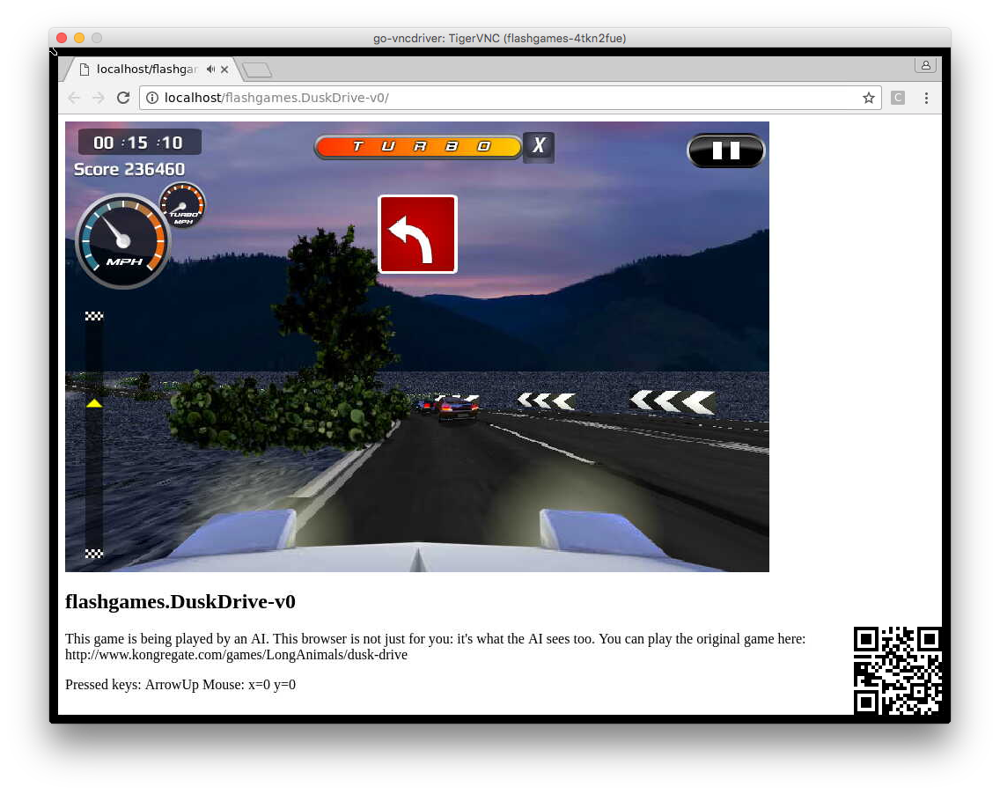

En la actualidad existe un gran número de librerías y lenguajes de programación que permiten incorporar técnicas de inteligencia artificial para desarrollar videojuegos más "inteligentes". A continuación realizaremos un breve repaso de las librerías que se emplean con mayor frecuencia en la actualidad tanto para desarrollar agentes dotados con técnicas de IA como para incluir este tipo de algoritmos en los videojuegos que se desarrollan.
Universe
Universe es una plataforma de software que pertenece a OpenAI, una compañía sin fines de lucro que busca promover y desarrollar inteligencia artificial "amigable" a fin de que ésta pueda benificiar a la humanidad. OpenAI fue fundada por Elon Musk y Sam Altam y tiene su sede en San Francisco, California, EEUU.
La plataforma Universe "está compuesta por unos mil 'entornos' formados por avanzados videojuegos, como Minecraft o Grand Theft Auto V, que se utilizan para simular la vida real" (El País, 2016). En esta línea, esta plataforma permite que un agente de inteligencia artificial use una computadora de la misma manera en que lo hace un ser humano: observando los pixeles en pantalla y operando sobre un teclado o ratón virtual (OpenAI, 2016).
A continuación podemos apreciar un ejemplo de código para arrancar la plataforma Universe y el resultado que se obtiene en el lenguaje de programación Python (OpenAI, 2016):
import gym
import universe # register Universe environments into Gym
env = gym.make('flashgames.DuskDrive-v0') # any Universe environment ID here
observation_n = env.reset()
while True:
# agent which presses the Up arrow 60 times per second
action_n = [[('KeyEvent', 'ArrowUp', True)] for _ in observation_n]
observation_n, reward_n, done_n, info = env.step(action_n)
env.render()
Ejemplo del despliegue del entorno virtual de juego en la plataforma Universe. Fuente: (OpenAI, 2016).
GYM
GYM es una herramienta para desarrollar y comparar algoritmos de aprendizaje por refuerzo. Puede integrarse a Universe y también permite enseñar a los agentes diversos conceptos, desde caminar hasta jugar juegos como Pong o Pinball. Los agentes se pueden programar con distintas librerías, como por ejemplo TensorFlow o Theano (OpenAI, 2018).
import gym
env = gym.make("Taxi-v1")
observation = env.reset()
for _ in range(1000):
env.render()
action = env.action_space.sample() # your agent here (this takes random actions)
observation, reward, done, info = env.step(action)A continuación podemos observar algunos ejemplos que se han desarrollado empleando GYM:
|
Agente inteligente que controla una hormiga en un entorno 3D. Fuente (OpenAI, 2018). |
Agente inteligente que aprende a jugar "space invaders". Fuente (OpenAI, 2018). |
easyAI
easyAI es un entorno de desarrollo basado en inteligencia artificial que permite trabajar con juegos abstractos de dos participantes. Estos juegos son similares al Tres en Raya, Connect 4, Reversi, etc. (Zulko, 2018).
Algunas de las características más importantes de esta librería se señalan a continuación (Zuiko, 2018):
- Está desarrollada en Python
- Permite que participen 2 jugadores
- Se basa en el algoritmo Negamax, alpha-beta prunning y tablas de transposición.
En la siguiente sección se presentan los detalles y un ejemplo de cómo programar el juego "Tres en Raya".